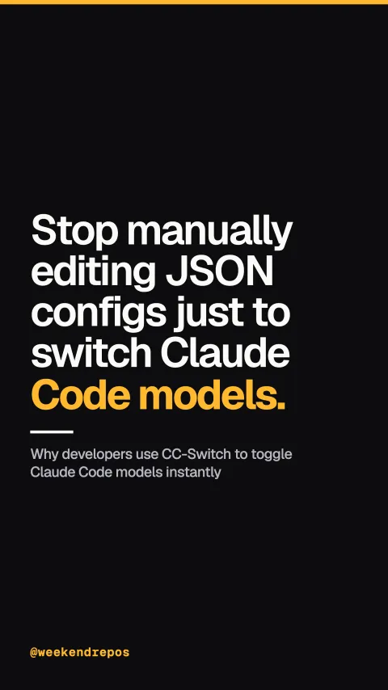

farion1231/cc-switch
Why developers use CC-Switch to toggle Claude Code models instantly

Stop manually editing JSON configs just to switch Claude Code models.
Manually updating hidden CLI configuration files breaks developer terminal flow.
Digging into hidden config directories to update base URLs and API keys whenever swapping active models is slow and error-prone.
farion1231/cc-switch · Claude Code CLI provider manager
CC-Switch provides an interactive terminal menu for instant model selection.
Launch CC-Switch to bring up an interactive terminal picker. Select any provider or custom proxy and your active environment updates instantly.
Interactive TUI model & provider selector
Manage API keys and environment variables across multiple isolated profiles.
It securely stores separate credentials for each provider, hot-swapping environment variables and configuration files with zero session disruption.
Instant credential hot-swap without session restarts
Seamlessly route coding tasks between expensive frontier models and local weights.
Route routine boilerplate to free local models like Qwen or DeepSeek, and instantly escalate tough architectural bugs to frontier models.
Multi-tier routing: Cheap drafting & frontier reasoning
Over 140,000 stars on GitHub. Open-source MIT.
With over 140,000 stars on GitHub, CC-Switch is the open-source Rust standard for managing agentic coding CLIs.
farion1231/cc-switch · MIT license